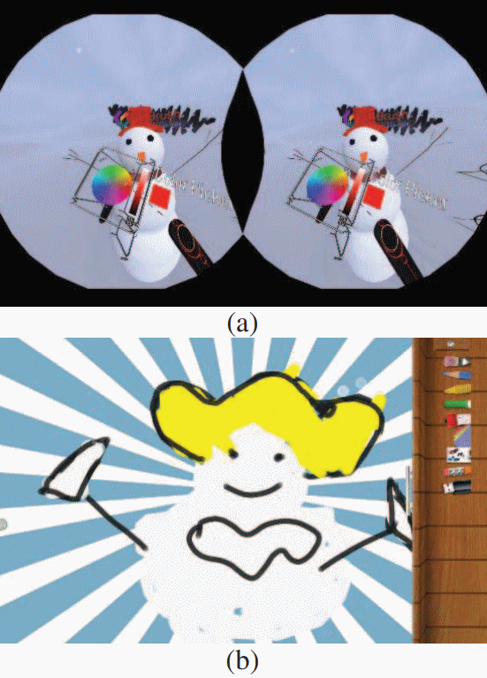

Effect of Using HMDs for One Hour on Preteens Visual Fatigue


Venue. ISMAR (2018)
Abstract. We designed a within-subject experiment to compare visual discomfort to preteen users caused by using head-mounted displays (HMD) and tablet computers for an hour. 18 participants younger than 13 years old were recruited to fulfill a series of similar painting tasks under both display conditions. Visual fatigue was measured with visual analog scale before and after experiment and during the break of experiment. The results indicated that HMD had a trend to bring higher visual fatigue than tablet computer during the exposure of 1 hour. Although the symptoms of visual discomfort disappeared after resting, there is need for preteen-specific head-mounted displays.
Link to this page: